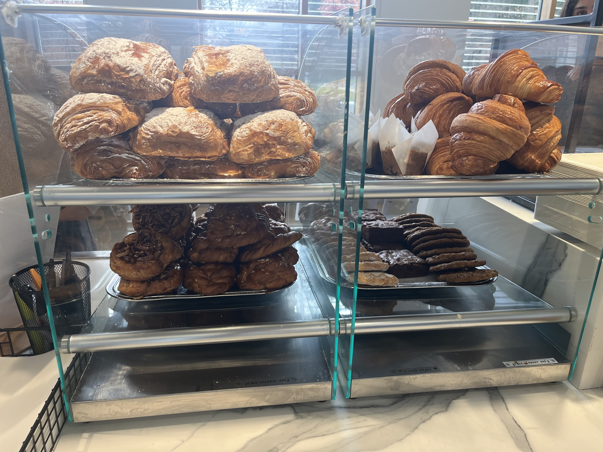
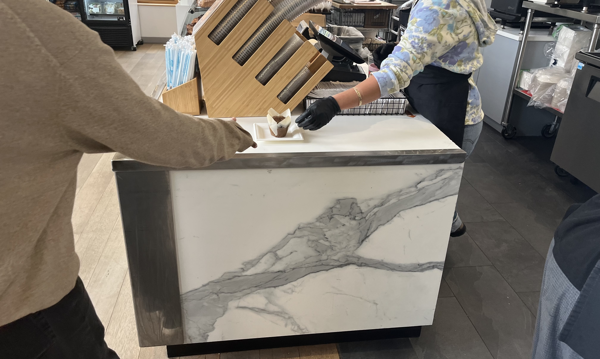
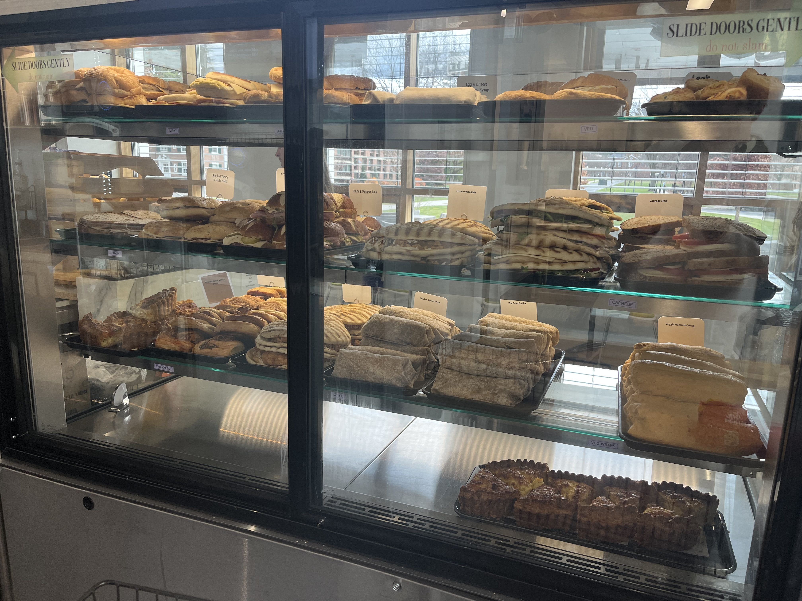
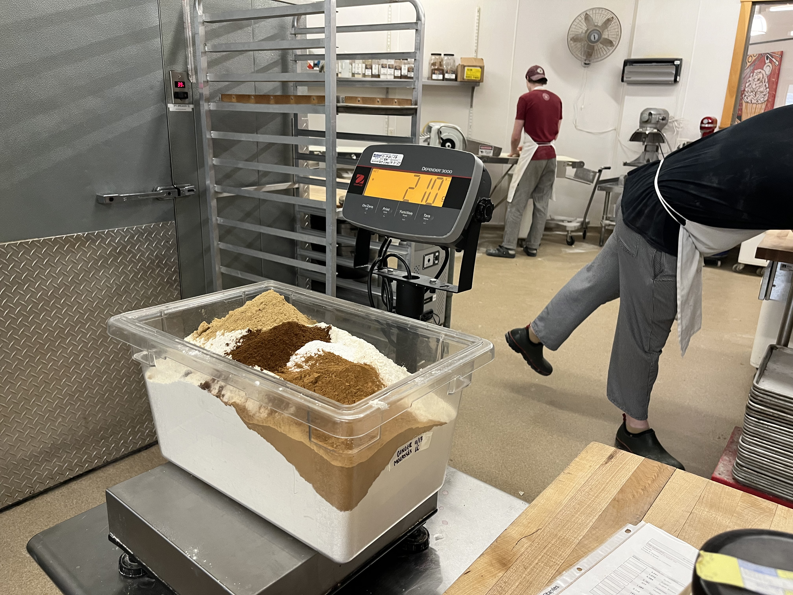
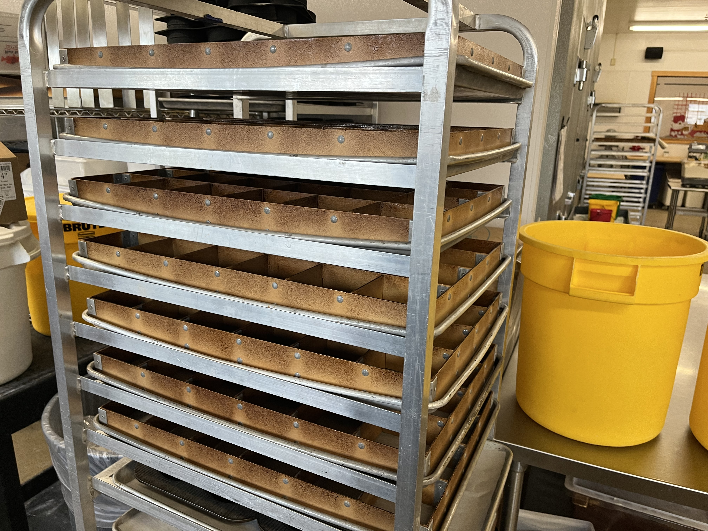
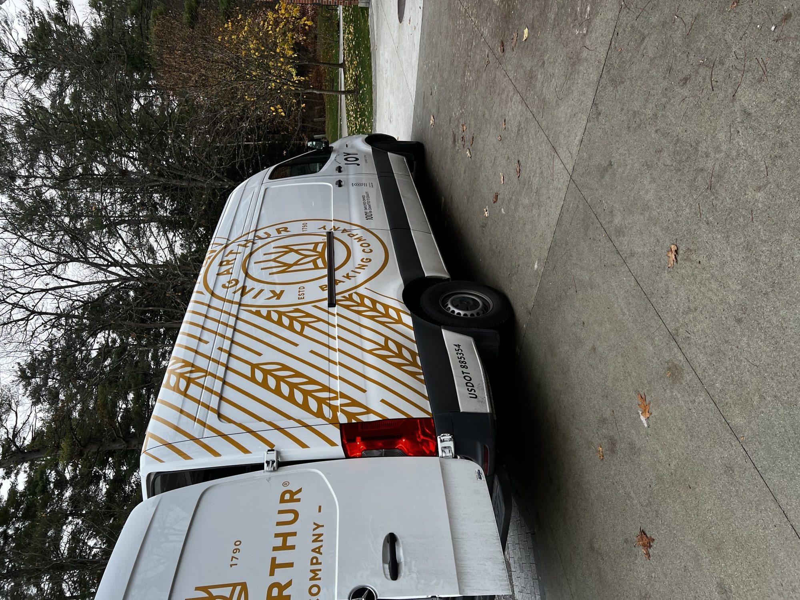
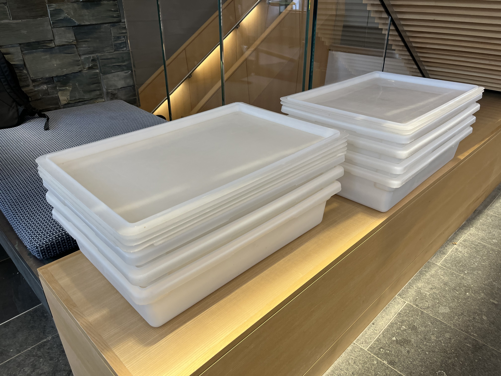
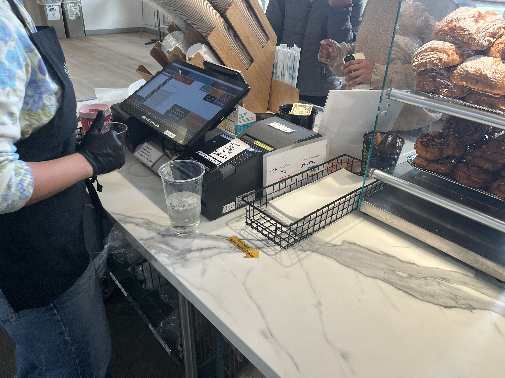

More than a cinnamon bun
For my final project, I followed the social and physical biography of a cinnamon bun sold at the Fern Cafe in Dartmouth’s Irving Institute.
The question I followed: How does an ordinary cinnamon bun change in economic, social, and cultural meaning as it moves from King Arthur Baking to the Fern Cafe and ultimately to a Dartmouth student?
- To the producers, it represents skilled labor, creativity, and pride in craftsmanship.
- To Dartmouth Dining, it is also inventory, a purchasing decision, and a product that must meet student demand.
- To Fern employees, it is part of a busy workday and a source of customer interactions.
- To Dartmouth students, it can be a quick breakfast, an occasional treat, a dessert shared with a friend, or even part of a birthday celebration.
The same pastry passes through all of these relationships, with many different meanings along the way.
The people in this story
- Alyssa Hendrix
- Head of Bakery, King Arthur Baking
- Alina Menard
- Lead at the Fern Cafe
- Fern employees (anonymous)
- Student workers at the Fern
- Dartmouth students (anonymous)
- Customers who buy, share, and think about the bun
- Me
- A student taking Anthropology of Food; you'll see my field notes and thoughts appear on white graph paper throughout
How I gathered and edited these interviews is explained in About the research.
The Fern Cafe, Irving Institute
Chapter 1: An ordinary Dartmouth breakfast on the way to class

Every day, Dartmouth students stop at the Fern to purchase coffee, sandwiches, pastries, and other food. I regularly eat there myself, often without giving much thought to the processes that make these goods available. The cinnamon bun initially appeared to be an ordinary object to follow: a pastry I enjoy, baked nearby and delivered to campus. Yet the more people I interviewed, the more I realized how many decisions and relationships lie behind that otherwise simple purchase.

Decisions made before students arrive
Alina Menard, the lead at the Fern, explained that King Arthur Baking delivers pastries to the Cafe each morning. She decides which products to order and in what quantities based on student demand, pricing, suitability for the Cafe, and her experience managing the operation. Some products sell out early; on some days, she told me, the chocolate croissants or the cinnamon buns are gone by 10 a.m. She prefers running out as opposed to having substantial leftovers. The selection students encounter in the display case is therefore not simply a reflection of student preferences. It is also the result of decisions, made by people like Alina, before students arrive.
The students I interviewed helped me see how much those choices matter. One Dartmouth student told me that they rarely buy pastries, but when they do, they look specifically for King Arthur products because they trust their quality:
“I rarely buy pastries, but when I do, um, I look specifically for the King Arthur ones because I know that they’re going to be really good. And you can’t always get King Arthur elsewhere on campus.”
Another Dartmouth student explained their first experience learning about the cinnammon bun at the Fern:
“I first discovered the [Fern] cinnamon bun probably like freshman or sophomore year. […] We have like weekly meetings there so sometimes I’ll go get one afterwards.”
Even so, they described the bun not as an essential daily ritual but as an occasional treat. It is so large and sweet that about one a month is enough, and they actually prefer King Arthur’s cardamom buns as a more manageable pastry.
“I feel like it’s an occasional treat because it’s so big and kind of like extremely sweet that I can only have one like maybe once a month and that’s enough to tide me over.”
In “The Gift of Deliciousness,” Amy Bentley discusses how our perceptions of deliciousness are shaped by culture, upbringing, memory, and individual experience (). I found this particularly interesting given how differently students described the exact same cinnamon bun: the sweetness and richness that make it so appealing to one student are the same qualities that make it less appealing to another.
These different preferences raise a question that became central to my research: how much of what students choose to eat is shaped by personal taste, and how much by the institutions that make particular foods available? Crowther’s discussion of foodscapes and commodification in Eating Culture offers a way to think about everyday eating as part of larger commercial and institutional relationships (). A student sees a pastry in a display case. But behind it is an entire set of decisions about sourcing, purchasing, pricing, labor, and demand.
Let’s go back.
Before it is anyone’s breakfast, the cinnamon bun begins at King Arthur Flour nearby, in fact, as something left over!
King Arthur Baking
Chapter 2: From leftovers to something we love at the Fern
One of the most surprising discoveries from my interview with Alyssa Hendrix, Head of Bakery at King Arthur Baking, was that the cinnamon buns are made partly from leftover croissant dough.
From my interview with Alyssa Hendrix, Head of Bakery
How croissant scraps become cinnamon buns
Alyssa: A lot of people don’t know this, but the cinnamon buns are made from the leftover dough from our croissants.
Martin: Really?
Alyssa: Yeah. So we waste as little as humanly possible here. That’s a big thing for me.
Alyssa: Um, so when we’re done with our croissants, we always have cut scraps, right?
Martin: Yes.
Alyssa: Um, and so we take those cut scraps and they go into the cinnamon bun dough.
Martin: Yes.
Alyssa: Which is— that’s why it’s kind of flaky, um, and laminated instead of.
Martin: Oh.
Alyssa: Sort of squishy like some cinnamon buns are. I don’t know if you’ve had our cinnamon buns, but.
Martin: They’re amazing. That’s why I was doing the project.
Croissant dough
The story begins with a different pastry. Croissant dough is laminated: rolled and folded so that thin layers of dough alternate with layers of butter.
What it is: laminated croissant doughWhat it means: part of another pastry
Trimmings
Cutting croissants leaves trimmings, essentially dough that does not become a croissant. Normally, it might be considered waste.
“We have all this extra dough, and we’re like, ooh, let’s make it something awesome.”
What it is: croissant trimmingsWhat it means: leftovers, but the chance to make something new
A separate recipe
Rather than discard trimmings from croissant production, the bakery incorporates them into cinnamon buns. What might otherwise be considered waste is transformed through labor, skill, and a separate recipe.
What it is: cinnamon-bun doughWhat it means: “something awesome”
Baked and iced
The buns are baked and finished with cream cheese icing. The laminated dough contributes to the distinctive flaky texture of the finished pastry.
What it is: a cinnamon bunWhat it means: something we love at the Fern
For me, this was a fascinating example of how food can change categories and value. Dough left over from one production process becomes an ingredient in another highly desirable, and tasty, product.
Even the croissant dough is linked to what the Fern orders. Alina told me that, as she understands it, croissant orders are hard to cancel at the last minute, because King Arthur pulls out croissant dough based on the number of pastries ordered. You cannot simply cancel the day before. Something like quiche, she said, can be adjusted closer to ordering.
Learning where it came from
The student interviews made this finding even more interesting. When I told a Dartmouth student about the croissant dough, they immediately connected the production method to their experience of eating the bun:
“I think that’s so sick that [it] is made of leftover croissant dough because I feel like a lot of cinnamon buns are missing the kind of like flakiness that comes with the laminated croissant pastry so they’re kind of like dense and stodgy as they would say on the Great British Baking Show.”
They explained that many cinnamon buns can feel dense, while King Arthur’s has a lighter, flakier texture. Learning that it uses laminated croissant dough helped explain why. The student also appreciated that the bakery had found a use for material that might otherwise be wasted. Their response was especially meaningful because they had originally discovered the pastry through visits to the Sustainability Office.
Another student’s reaction was somewhat different. They appreciated the sustainability aspect, but wondered whether croissant dough and cinnamon-bun dough ought to be different:
“Part of me thinks that [their croissant] dough should not be the same as their bun dough, just because those are two different food items. […] Their bun tastes pretty good, so, you know, but the sustainability thing does matter.”
They acknowledged that they did not know enough about baking to judge the recipe, and said the reuse of dough made them somewhat more inclined to buy the bun. Neither response was simply a reaction to the word leftover. Both students weighed the idea of sustainability against their own expectations of taste and quality.

Sustainability as a relationship
Alyssa also discussed King Arthur’s efforts to source ingredients regionally and reduce packaging waste. At the Fern, Alina described working with King Arthur to replace disposable cardboard packaging with reusable delivery bins. She was actually the one responsible for the change, and reached out to KAF about changing from cardboard boxes to reusable containers; as she described it, small decisions like this can be made between the Fern and King Arthur without going through a long chain of approvals. This is a reminder that sustainability is not simply a technical question about materials and waste. It also depends on relationships and negotiations between people, suppliers, and institutions.
When we talked about waste, Alyssa told me how little the bakery throws away. I then asked what happens to pastries that don’t sell:
From my interview with Alyssa Hendrix, Head of Bakery
Why almost nothing goes to waste
Alyssa: We do try to reuse as much as possible, um, as few single-use items as possible. Um, I think the amount of trash that we generate downstairs in the bakery is the least of anywhere I’ve ever worked in my 20 years of doing this.
Martin: Really? Okay, that’s amazing. That’s awesome.
Alyssa: It’s awesome. And that’s— I like that you asked about the cinnamon buns, because very specifically, that’s a really good way that we have all this extra dough, and we’re like, ooh, let’s make it something awesome.
Martin: Well, that’s perfect, because as an engineer, one of my interests is sustainability. So that’s why I’m kind of interested in the life cycle of a food and, like, how is it used? I’m kind of curious about the cinnamon buns, as well as other pastries.
Martin: What do you guys— because I know what the Fern does. They’ve told me, what do they do with pastries that are no longer fresh that they don’t want to serve?
Martin: I’m just kind of curious, what do you guys do with them?
Alyssa: So, I’ll be honest, that actually doesn’t happen as much as you think.
Martin: Really? Good.
Alyssa: We tend to run a little bit of a deficit, sometimes to our own detriment, with, you know.
Martin: Sure.
Alyssa: Profitability and whatever. Sometimes I think we probably could sell a little more, but I would rather run out at the end of the day. So I will be honest, I would say 98% of the time, we don’t have anything left over.
Martin: Amazing.
Alyssa: Uh, everything else, when the people who work here arrive first thing in the morning, they’re over in our break room.
Martin: Gotcha.
Alyssa: The people get to snack.
Martin: That’s amazing.
Alyssa: Yeah, it’s fabulous.
Martin: I mean, I think that’s perfect.
Alyssa: Pretty much nothing goes in the trash, because that break room, if there are things in there in the morning, it’s like vultures.
Martin: Yeah.
Alyssa: They’re gone.
Martin: I can understand that, yeah. Hey, you could give them to Dartmouth students for free if you’d want. I’m sure that’s not company policy allowed, but I’m just saying.
Martin: I can say that, you know.
Alyssa: I wish. I totally wish.
Martin: You have my phone number, so you know who to text if there's leftovers.
Alina told me she shares that preference at the Fern: she would rather run out than have leftovers.
In “Making Pigs Local,” Brad Weiss argues that the relationship between food and place is built through production practices, sensory experiences, and social relationships, more than just geographic proximity. The relationship between King Arthur and the Fern similarly involves more than just their location on the opposite sides of the Connecticut River: rather, their ongoing communication through orders, and students’ familiarity with King Arthur help give the pastries a more local, recognizable identity ().
Dylan Gordon’s “Food: Translation” offers a useful lens for these transformations (). The dough changes materially as it becomes a cinnamon bun, but its meaning changes too: from a production leftover, to an example of resourcefulness, to a product students value for its taste, texture, and connection to King Arthur. What seems like an ordinary pastry carries a history that is not visible in the display case.
The bakery at King Arthur Baking
From around 3 a.m.
Chapter 3: The work and people behind the pastry
During my visit to King Arthur, I had the privilege of seeing the in-store bakery. I observed bakers working with specialized equipment, handling dough, and producing pastries through a combination of repetitive movements and highly skilled experience. Most of this work happens long before any customer arrives.
Alyssa explained that baking requires both formal knowledge and practical experience. Understanding the chemistry behind a recipe helps bakers troubleshoot problems, but many skills develop through practice and mentorship.
“For pastry, there’s so much chemistry involved, um, that I personally think something like a pastry school or a pastry program somewhere is incredibly helpful so that you can get that scientific background […] Anybody can come in and they can follow a recipe, and they can make a loaf of bread, but if you don’t understand the science behind it, you’re not going to be able to fix it if something goes wrong.”
One moment during my tour illustrated this particularly well. A baker pulled Alyssa away to ask for her judgment about dough that did not feel quite right. Her experience was needed to assess something that could not necessarily be resolved by following written instructions alone. Later, I asked her how she thinks about that kind of learned skill, using my mother’s cooking as a comparison.
From my interview with Alyssa Hendrix, Head of Bakery
Discussing learned skills
Martin: So walk me through that sort of a little bit over your career and, like, how do you view that question of, like, a learned skill? I use this example with my mom’s cooking, where my mom makes some soups.
Martin: She’s from Slovakia, so former Czechoslovakia, right? Some of the soups she makes.
Martin: She has walked me through how to make them, and I can’t for the life of me make them on myself, not nearly as good as her. So walk me through that. What does that experience look like in your career and, like, how do you see that in baking today when you’re training new bakers?
Alyssa: Uh, if you’re comparing it to anything like that, so much of it is just practice.
Martin: Yeah.
Alyssa: You know, it’s, um, you can, again, like I said earlier, you can go to pastry school, you can learn all the chemistry, you can learn all the science, you can know everything in your head, start to finish. But until you’ve done it 100 times or 1,000 times or 10,000 times, you’re not going to have that same skill as somebody who has done it that many times. Um, you know, and I’ve seen a lot of very talented, especially pastry bakers, who can do all kinds of crazy things
Alyssa: And it’s just practice.
Alyssa: Um, and just so that I can be on your mom’s side for a second, it’s also love.

Work Dartmouth students (probably) never see
Alyssa also discussed the demanding nature of bakery labor, most of which happens before a customer ever arrives:
From my interview with Alyssa Hendrix, Head of Bakery
The 3 a.m. shift
Alyssa: I don’t think people necessarily know that we are here at 3 o’clock in the morning every day.
Martin: You are? I didn’t know that, for example. Wow.
Alyssa: It’s kind of true. Um, a lot of people will come in, you know, we have those big windows into the bakery downstairs, and they’ll come in at 2 o’clock.
Alyssa: And they’ll say, oh, there’s nobody here baking. I’m like, oh, no, they’ve been gone.
Alyssa: Their day is done. Um, you know, so it is, it’s a very tough job. It’s a very physically demanding job.
Alyssa: You know, when you’re throwing around several hundred pounds of dough at a time.
Alyssa: It is. It breaks all of us down at some point.
Alyssa: Um, but the truth is, we all love it. You have to be insane to do this for a living, at least a little bit insane.
Martin: You think? Could you expand on that?
Alyssa: Like, you know, beat the crap out of yourself all day and be covered in flour from head to toe. And a lot of it is, um, repetition, right? When you’re making 400 baguettes.
When I told a Dartmouth student about the early start, they said they would have guessed it, but that it still gave them a deeper appreciation of the work:
“I think those bakers start very early. But it is pretty impressive to think about. I don’t think I could do that.”
I asked Alyssa what it means to make food with “love.” She was candid that her answer was a personal belief rather than a scientific claim:
From my interview with Alyssa Hendrix, Head of Bakery
Is love the secret ingredient?
Martin: What form does that actually take when you say love?
Alyssa: Oh, I don’t know.
Martin: Because when we talk about, like, physically, love is not a real ingredient you can put into it, but perhaps it’s part of the process of the cooking. So what do you think that looks like if you had to actually, like, think about what is that, if you had to, like, point at it?
Alyssa: I can give you an answer. Um, it’s a little maybe cheesy and esoteric, right?
Martin: Okay.
Alyssa: So understand that this is, this is no way scientific. This is just my own personal belief system. I do think that the attitude that you have when you are making a piece of food, whatever it is, uh, I think the mood and the attitude you have will reflect in that somehow.
Alyssa: But I’ve done this enough to know when I’ve got a team that’s happy.
Alyssa: Everything coming out of there just looks better. It looks better. The people who are eating it are happy.
Alyssa: Right? So it, it, there may not be any way to ever scientifically quantify that, but I firmly believe that happy people make better food.
Alyssa: And, and it’s, maybe it’s not even like making it with love. It’s just kind of making it with joy.
Crowther’s discussions of cooking, labor, and food knowledge helps us understand the difference between written instructions and embodied expertise (). The cinnamon bun represents ingredients and a recipe, certainly, but also the early mornings, the physical effort, judgment, mentorship, and the pride that the bakers take in their craft.
Morning.
The pastries are packed, labeled, and loaded for the day’s deliveries.
From the bakery to the Fern
Each morning
Chapter 4: From King Arthur to Dartmouth
After production, the cinnamon bun enter their transportation journey.
Packed
Alyssa described the bakery’s packing and expediting process, in which staff prepare, label, and organize products for daily deliveries. Alina told me the pastries are packed so that they don’t touch each other during transport.

Loaded
King Arthur’s drivers then transport the pastries to customers, including Dartmouth, in the morning. Alina told me the Fern is King Arthur’s main customer at Dartmouth, taking in about $800 worth of pastries a day.

Across the river
The trip itself is short. King Arthur’s bakery in Norwich, Vermont, sits just across the Connecticut River from Dartmouth in Hanover, New Hampshire.
Rolled in
A Fern employee described what happens when a delivery arrives:
“When the pastries get [to] the Fern, they get dropped off by KAF vans and rolled into the Fern. Then the boxes are stacked and usually unpacked and displayed by our manager, Alina.”
Today the pastries arrive in reusable white bins. The Fern unpacks them, and King Arthur washes the bins.

On the trays
From the bins, the pastries go onto trays in the display case. When a student buys one, staff ask whether they would like it heated.
What looks like a finished product on a shelf has already passed through the hands of bakers, packing staff, drivers, and Cafe workers.
Who has handled the bun so far
- Bakers
- Packing staff
- Drivers
- Alina
- Fern employees
- A student, soon
Inventory
At the Fern, the cinnamon bun takes on another meaning: inventory that must be ordered, priced, displayed, sold, and managed. Alina balances what King Arthur offers with student preferences and the Cafe’s financial and operational needs. She receives a list of everything King Arthur sells, and not all of it suits a Cafe. She looks for items that are not too costly, not too hard to transport, and easy for a student, and she tries not to order things that won’t hold up the next day. For quantities, she relies on experience; she has been doing this for a while, and she knows what is needed.
| Item | What Alina told me |
|---|---|
| Cinnamon buns and chocolate croissants | Popular enough that, on some days, they are gone by 10 a.m. |
| Brownies | Ordered only on Mondays, because they come in a count of 20. In terms when they are especially popular, she orders more on Wednesdays. |
| Almond cloud cookie | Gluten-free. When a lot of customers are looking for gluten-free options, it always goes first. |
| Regular croissants | She tries to sell them the day they arrive. Being able to reheat a pastry helps: warming it gives it a second life. |
| Quiche | Sells really well, and is easier to adjust closer to ordering. |
| Veggie danish | Counts toward a breakfast meal swipe. |
| Seasonal pastries | Rotate through the year. King Arthur lets the Fern know, so the Cafe can post signs and allergen information. |
| Cheesecake | On King Arthur’s list, but not necessarily sellable at the Fern. |
King Arthur, she said, is very responsive. It even held a tasting at the Fern to gather preferences a few months before our interview, and Alina lets the bakery know when the Cafe closes for break.
Prices are set by Dartmouth. Alina sees what Dartmouth pays on King Arthur’s invoice, but she does not decide what students pay. She submits the invoice within Dartmouth Dining, and the price is determined there.
Money that doesn’t feel like real money
Dartmouth’s broader dining system also shapes how students encounter food and think about its price. When I asked a Dartmouth student whether paying with dining dollars changes how they think about price, their answer was revealing:
From my interview with a Dartmouth student
Dining dollars and the meaning of money
Martin: In general, does paying with dining dollars or a meal swipe change how you think about the price of things at Dartmouth?
Student: Dining dollars versus swipe. Um, I will say with the dining dollars, I just, like, never remember the equivalency, so I have absolutely no idea if they’re the same thing or what I mean or not. Um, yeah.
Martin: And what about— I mean, what do you think about dining dollars and meal swipe versus regular dollars?
Student: I definitely am under the impression that, like, I— like, I know it’s real money, but in my head it doesn’t feel like real money. And, um, I kind of, like, feel like I have a relatively unlimited amount of dining dollars. So I kind of just, like, don’t— I don’t track mine at all or think about it really at all in the same way I would if I was, like, buying coffee with real money.
At the same time, seeing King Arthur’s name on a pastry strongly influences their expectations of quality. They said that if they wanted a pastry, they would choose a King Arthur product even over another option they might otherwise prefer:
“If I see that it says King Arthur Flour, I will buy it. If I need a pastry, like, I’ll buy [King Arthur] over something else. Even if the other thing is maybe a pastry I like better, I’m picking King Arthur over, like, the other one.”
Even freshness, in their view, matters less than the name:
“Not always the world’s freshest pastry, but definitely better than other options. […] Stale [King Arthur] is better than fresh, not King Arthur.”
Here, value is not determined by price alone. Reputation, institutional payment systems, and personal experience all matter.
Behind the counter

Fern employees also showed me how much labor continues after the pastries have been delivered. Some work closing shifts, and a typical shift, they wrote, begins like this:
“A typical shift begins with me putting my apron on, putting my hairnet on, washing my hands and putting gloves on.”
Between making coffee and heating food, they prepare the Cafe to close. In their words, that consists of:
- sweeping
- cleaning the ovens
- wiping down everything
- washing the syrup bottles
- restocking cups and coffee beans
- refilling the drink fridge for what is missing
Much of this work happens behind the scenes while customers see only the counter and the food.
All out for the day
For one employee, the pastries are often already sold out by the time they arrive. They described how disappointing it can be to tell students that nothing is left, especially when someone came hoping for a particular pastry:
“... by then all the pastries are gone. It’s always sad to tell people who come in for a pastry that we’re all out for the day. Some people seem really devastated by it.”
The employee has noticed relatively few leftovers this year:
“This year I haven’t really noticed unsold pastries as much as last year. I don’t think much gets left over. On the few times there are things we wrap them up and store them to sell the next day.”
Alina’s preference for avoiding substantial waste helps explain why a popular product may disappear before the afternoon. Pastries are never kept for more than two days. When there are a lot of leftovers, they go to a food pantry. On one occasion, after a mix-up meant an entire order from KAF was sent (instead of just the daily order), Dartmouth paid King Arthur for it and the pastries went to ’53 Commons or were spread among the other Cafes, to ensure nothing went to waste.
Who decides
The employee also raised a larger point about institutional responsibility. They enjoy working at the Fern but wish students better understood how much influence Dartmouth Dining has over the food options available to them:
“I think the Fern is a great place to work. I wish people understood the agency Dartmouth dining has in our food options and pushed DDS to do more for our community in terms of healthy and nutritious foods.”
“I’ve learned so much about how DDS works and I think students can be asking for more from the higher levels of management.”
Their perspective complicates the idea that the Cafe is simply a place where customers express their preferences. Students make choices, but the range of choices is shaped by decisions elsewhere in the institution.
Alyssa at KAF also offered another reminder that food preferences are culturally shaped. Reflecting on her experience working in Alabama, she described how pastries that appealed to customers in New England did not always sell in the South, and vice versa:
From my interview with Alyssa Hendrix, Head of Bakery
How culture shapes taste across regions
Martin: Um, have you here at King Arthur Flour, or maybe anywhere else in your experience, ever changed a recipe or developed a pastry differently because of what customers or the business wanted, even if it was kind of went against what your thinking was for the pastry?
Alyssa: All the time. Yes, rather consistently, actually. Um, good example.
Alyssa: Anyway, um, but living in Alabama was really interesting because Southerners have a very different take on pastries than Northerners.
Alyssa: Just different flavors they like. So, like, up here we really like our cornbread savory. Down there they like their cornbread sweet.
Alyssa: Um, little stuff like that. And so I would make things for our pastry case, and they wouldn’t sell. And I couldn’t understand because up here, you know, people would go nuts over this stuff.
Alyssa: Nope. And then they have all kinds of stuff down there that if I tried to sell it up here, it wouldn’t go over well.
Martin: Sure.
Alyssa: And so, yeah, I mean, you have to, you have to cater a little bit to what the people want.
Back at Dartmouth, a student used the exact same word to explain why the cinnamon bun is not quite for them:
“But, like, cinnamon buns are supposed to be sweet. I think they’re just catering to that type of person, which isn’t me.”
Gordon’s idea of translation applies here as the cinnamon bun moves between systems of production, transportation, administration, and consumption (). Crowther’s discussion of foodscapes helps explain how the Fern and King Arthur operate within wider networks of suppliers, institutions, and customers (). The bun’s journey is not just a trip in a delivery van. It is moving through different systems of labor, value, and decision-making.
Dartmouth, and beyond
Chapter 5: The social life of a cinnamon bun at Dartmouth, and beyond
One of the most interesting moments from my King Arthur interview came when I asked Alyssa whether it bothered her that students eating her pastries might never know how much work went into making them.
From my interview with Alyssa Hendrix, Head of Bakery
Making food and letting it go
Martin: Does it matter to you that, like, a student at Dartmouth, for example, who eats it, might never really know anything about the work that went into it or the history behind it? Does it matter to you and how people consume and appreciate pastries?
Alyssa: Not at all. Uh, I would love to think, obviously, that everyone who would eat one would be thoughtful and considerate, but, um, okay, so I’m a knitter. Um, and I remember when I first started knitting and I was making people, you know, hats, whatever else.
Alyssa: And I would get really sad if, like, I made someone something and I never saw them wear it.
Alyssa: And I remember I got a really good piece of advice from an older woman who I used to knit with, who basically said, “Look, when you make something, you have to put it out in the world and let it go.”
Alyssa: Um, and so that’s very much how I feel about the baking, is we’re, we’re. Do I wish everyone sort of really appreciated the ins and outs and the fancy butter that we use and the fancy vanilla that we use? Of course you want that.
Alyssa: Um, mostly we’re just making things and then putting them out in the world and letting them go. And.
Martin: Right.
Alyssa: If it makes somebody smile, that’s all I care about.
Martin: Absolutely.
Alyssa: I mean, so I think there’s a level of joy that I think people will get either way, even if they know nothing about it and they don’t know where it came from, you know.
I've grouped these by "two sides of the Connecticut River" below. The cinnammon bun takes on different understandings depending on where it is. Alyssa and the students never spoke to each other; these answers come from separate interviews, but are closely related.
“Do I wish everyone sort of really appreciated the ins and outs and the fancy butter that we use and the fancy vanilla that we use? Of course you want that. Um, mostly we’re just making things and then putting them out in the world and letting them go.”
“I think it definitely matters to know who made my food. I wouldn’t say that it’s a thought that regularly occurs to me.”
“But still, like, if you write a piece of music, at some point you got to put it out. […] And then it belongs to everybody else, you know? […] It’s not you anymore.”
“I actually really enjoy the cardamom buns a lot. I don’t know if the same baker also works on those, but those are fantastic and a little bit more manageable in my opinion.”
One bun, many meanings
The student interviews brought that idea back to Dartmouth. A Dartmouth student has tasted the cinnamon bun, but finds its size and icing overwhelmingly sweet.
“It’s a little too sweet for me personally, which is why I don’t buy it myself.”
“The size? Good for the price. That’s a huge cinnamon bun, actually.”
“I like the taste of the icing, though, but it’s just, like, overwhelming.”
They consider it more of a dessert than a breakfast: “For me, I think it’s a dessert.” Their roommate sometimes buys it for breakfast, and the two have a routine of visiting the Fern together and chatting before class:
“If I go to the Fern, I often go with my roommate, […] and we chat before our classes.”
This student described occasionally taking a bite of their roommate’s food: “I guess, technically, I steal a bite.” The same pastry can therefore be a meal for one person, a shared taste for another, and part of the social setting of a friendship. For this student, a pastry is almost always social:
“I feel like I only get a pastry if I’m with a friend. If I’m alone, I’m just in a rush, usually.”
Even ordering one involves a small social interaction. They would ask for it warmed, “for sure.” But buying from a friend who works behind the counter can be awkward:
“It is definitely more awkward when it’s somebody I know […] So it’s, like, enough that I have to say, like, ‘Oh, how are you doing?’ […] But then there’s this really awkward moment of transition to […] ‘Um, can I please get a pastry?’”
When I suggested that their roles had switched, from friends to server and customer, they agreed: “She’s like serving me, yeah.” A pastry purchase can briefly change a relationship and their roles in the interaction.
Another Dartmouth student described the cinnamon bun as an occasional treat rather than a central part of their Dartmouth life. It does not especially remind them of home or family, although they have fond memories of visiting King Arthur’s own bakery.
A birthday cake
Another story came from a Fern employee, who met a student who said the cinnamon bun was her favorite food from the Cafe:
“I usually don’t work when the cinnamon buns are selling but I did meet a girl […] the other day who told me her favorite food from the Fern is the cinnamon buns and that her friends made her cinnamon bun cake from King Arthur bakery cinnamon buns for her birthday.”
I did not interview the birthday student directly, but the anecdote shows how a commercial pastry can be incorporated into a personal celebration. In that setting, the cinnamon bun is no longer just inventory or a convenient snack. It becomes part of a gesture of friendship.
These stories also complicate the idea of a single, universal consumer experience. One student finds the bun too sweet; another loves its flaky texture but buys it only occasionally; for someone else, friends reportedly turned it into a birthday cake. A bakery’s intention, a Cafe’s inventory system, and a student’s experience do not always align perfectly. Yet the bun connects them all.
Paxson’s “Food: Deviation” and Weiss’s “Food: Integration” help me think about the judgments, relationships, and social contexts through which people assign value to food (; ). Eating can be private, routine, social, celebratory, or emotionally significant. The meaning of a cinnamon bun is therefore not fixed when it leaves the oven. It continues to change as people buy it, share it, reject it, remember it, or give it to someone else.
Full circle
When I told a Dartmouth student that Alyssa hoped her pastries would make people happy, they had a simple response.
“If it makes somebody smile, that’s all I care about.”
“You can tell the KAF head [baker] that they definitely bring me a lot of joy.”
The baker and the student had never met. The student did not know about the 3 a.m. shifts, the repeated practice, or the decisions behind the counter. Yet the outcome Alyssa cared about had reached them.
I began this project wanting to understand the life cycle of a pastry. I expected the most interesting findings to concern ingredients, production, transportation, and waste. Those things still matter, especially the reuse of croissant dough and the effort to reduce packaging. But the interviews changed the focus of my research. I learned about the baker who trusts experience more than a recipe alone, managers who balance student demand against waste, the employee whose work and understanding of the cafe is rarely noticed, and the students who assign very different meanings to the same cinnamon bun.
The bun’s physical journey may end when someone eats it. Its social life does not. It may become a memory of a meeting in the Irving Institute, a conversation with a roommate, a birthday cake, or simply a small moment of happiness before class. Perhaps that is the most meaningful part of its biography: the people who make it cannot predict what it will become, and it means something slightly different for everyone. For me, it's one of my favorite reasons to come to the Fern.
Tomorrow morning, the bakers will start again.
About the research
This project draws on interviews conducted in November 2026 with Alyssa Hendrix, Head of Bakery at King Arthur Baking; Alina Menard, lead at the Fern Cafe; Fern employees; and Dartmouth students. It also incorporates my original observations, photographs, and short video footage at King Arthur Baking and the Fern.
Student and employee perspectives are presented anonymously. The birthday-cake story is a secondhand account reported by the employee, not an independently verified interview with the person involved. Photographs and video of general bakery work are not presented as footage of cinnamon-bun production. The full interview transcripts are not reproduced here.
A note on quotations
Quotations come from recorded interviews and written responses. Longer interview excerpts are condensed: I selected turns from each conversation, so some of the exchange between them is not shown, and the speakers’ hesitations are left in. Alina Menard’s comments are paraphrased from my interview notes rather than quoted. Recorded interviews were transcribed automatically, so I corrected obvious transcription errors: words in square brackets are my corrections or clarifications (the software did not always recognize “King Arthur,” for example). Bracketed ellipses […] mark omitted words. I standardized capitalization and punctuation but did not otherwise change anyone’s words.
Thank you to Alyssa Hendrix, Alina Menard, the Fern employee, and the students who shared their time and their thoughts with me.
Questions for future exploration
This project answered some of my questions and opened many more. I set out to understand the life cycle of a pastry, and I came away wondering how the physical and social stories of a food could be told together. These are the questions I would pursue next:
Reflections:
- I began by imagining a journey from ingredients to disposal, but I spent most of my time following the bun only from the bakery to the student, with less time to investigate deeper into material origins. Where do the flour, butter, and cinnamon come from, and who are the people behind them? What happens to the bun’s packaging after it is eaten?
- Would a different pastry, such as the cardamom bun one student mentioned they prefer, have a social biography as layered as the cinnamon bun’s? Or does the bun’s origin as leftover croissant dough make it unusual? I don't know this yet since I only looked at the cinammon bun!
- Gordon’s idea of translation () gives me a way to ask how a food’s meaning changes as it moves between systems. Would the bun mean the same thing in a different dining hall, on a different campus, or in a different season? Is this specific to Dartmouth? Further research is required!
- How would my picture of the Fern change if I spent a full day there, including the afternoons when, as one employee told me, the pastries are already gone? I would have loved to spend more time at the Fern simply watching and observing interactions.
- Alyssa’s answer about "letting go to your art" challenged my assumption that making the hard work behind pastries visible would be the point of this project. If makers do not need eaters to understand all the work behind their food, what is a project like this for, and who benefits most from it? I hope that my findings and research are still useful!
How this website was made
This website was created with the help of AI () through “vibe coding”: I described what I wanted in plain-language prompts, reviewed what the AI produced, and corrected mistakes along the way, with the code written in the format of a standard website (HTML, CSS, and JavaScript).
The prompts used to build this website are as follows:
- “You are an expert web developer. Let's make a visually compelling, immersive, scroll-based storytelling experience, similar to a high-quality interactive magazine feature, documentary photo essay, or digital humanities project.”
- “You may use my draft as a template before building anything. Do not invent interviews, quotations, historical details, or findings.”
- “Build the entire website using HTML, CSS, and JavaScript.”
- “Most importantly: this should feel like a journey through the life of one cinnamon bun, told through the people whose lives it touches.”
- "Do not cite any outside resources. If you do, be explicit about what you are quoting or citing at all times."
- “You can use the social bio of a pastry FINAL draft text, a draft of my website visual, as a rough template but you can also take your own freedom and the above instructions to build the final website deliverable.”
- (Many other follow up prompts to tweak and walk me through the code of the website were also used)
- Finally, there are still a few bugs and glitches I've been working out on the page, but I believe I have caught most!
References
- Anthropic. 2026. Claude Sonnet 5.5. Large language model. Conversation with author, November 17–24, 2026. https://claude.ai.
- Bentley, Amy. 2026. “The Gift of Deliciousness: How Taste, Flavor, and Pleasure Contribute to Human and Planetary Health.” Culture, Agriculture, Food and Environment 48 (1): e70014. https://doi.org/10.1111/cuag.70014.
- Crowther, Gillian. 2018. Eating Culture: An Anthropological Guide to Food. 2nd ed. Toronto: University of Toronto Press.
- Gordon, Dylan. 2013. “Food: Translation.” Fieldsights, August 11. https://www.culanth.org/fieldsights/food-translation.
- Paxson, Heather. 2013. “Food: Deviation.” Fieldsights, August 19. https://www.culanth.org/fieldsights/food-deviation.
- Weiss, Brad. 2011. “Making Pigs Local: Discerning the Sensory Character of Place.” Cultural Anthropology 26 (3): 438–461. https://doi.org/10.1111/j.1548-1360.2011.01106.x.
- Weiss, Brad. 2013. “Food: Integration.” Fieldsights, August 26. https://www.culanth.org/fieldsights/food-integration.
Primary research
- Hendrix, Alyssa. Interview by author. King Arthur Baking, November 2026.
- Menard, Alina. Interview by author. Fern Cafe, Dartmouth College, November 2026.
- Dartmouth student interviewees. Interviews by author, November 2026.
- Fern Cafe employee. Written interview with author, November 2026.
- Original field notes, photographs, and video recordings by author, King Arthur Baking and Fern Cafe, November 2026.